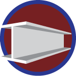
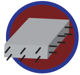
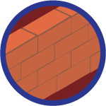
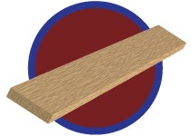
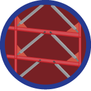
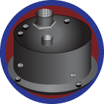
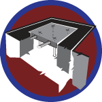
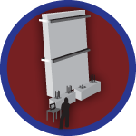

For the construction industry, Earth is both benefactor and enemy – it provides materials to build the world's structures, then attacks them with heat and cold, wind and ice, flood and erosion and one of nature's most powerful forces, the earthquake.
Whereas earthquake-proof structures are pipe dreams – engineers understand and accept that some damage is inevitable during a quake – earthquake-resistant structures are on designers' drawing boards and getting better all the time. Jim Wight, the Frank E. Richart Jr. Collegiate Professor of Civil and Environmental Engineering (CEE), and Professor Sherif El-Tawil, CEE associate chair, explained that for years the objective of earthquake-resistant design was to prevent buildings from collapsing and killing people. "Engineers go much farther, now," Wight said. "We design structures so they not only survive but are functional as soon as possible after a quake. If it's an important structure – a hospital or nuclear power plant – it needs to be functional immediately. Less important buildings can be down for days or weeks or months." El-Tawil added that the level of earthquake-resistant design is also tied to risk. He and Wight explain the complex issues that engineers face as they work to improve technologies for earthquake resistance.
Materials
STEEL is more ductile than other materials and absorbs more energy. The design of steel-framed structures and steel's behavior beyond its elastic range are two important recurring topics in Michigan Engineering labs, offices and classrooms.
CONCRETE is strong in compression but cracks easily when subjected to tension. However, reinforcing concrete with steel bars – rebar – provides tensile strength. Michigan Engineering researchers have advanced the technology by infusing concrete with steel fibers to make a composite that improves concrete's resistance to compression and tension. A composite of this kind will allow engineers to use less steel reinforcement throughout a structure. It also simplifies and lowers the cost of reinforcement cages (cage-like structures of steel bars that, as a system, act like a skeleton within the concrete).
MASONRY is a fairly brittle construction material, not conducive to earthquake resistance. However, steel-reinforced masonry is an improvement and behaves somewhat like reinforced concrete but still isn't as effective. Masonry can be used for structures up to 18 stories, but not for structures higher than that, and not in zones of high seismic risk.
TIMBER is a popular building material, but it's limited to buildings with relatively few stories – primarily homes and other low-rise buildings.
End box
Passive Energy Management
At its most basic level, an earthquake is a shaking motion that delivers energy to a building. Managing that energy is a major challenge for structural engineers. Designs that employ the passive mode of management invite damage – like crumple zones in cars. The designs incorporate the behavior of inelastic material that absorb a quake's energy and reduce the lateral forces that the rest of the building experiences. "When a part of the structure deforms beyond its elastic limit, it dissipates seismic energy, but the price you pay is that it doesn't return to its original shape; that is, it accumulates damage," Wight said.
End box
Semi-Active Energy Management
The semi-active mode of managing an earthquake's energy is a hybrid technology – part active, part passive. One form of this semi-active energy management is magneto-rheological field (MRF) damping. The concept, developed in part by Michigan Engineering Professor N. Harris McClamroch (now retired), is highly complex, but El-Tawil was able to simplify it. "Oil under pressure will pass through an opening fairly easily. If iron filings are put into oil, the liquid still moves easily. However, if a magnetic field is placed around a volume of oil with the iron filings in it, the liquid becomes highly viscous and hard to push. By applying this concept to a piston, engineers can create shock absorbers, or dampers, with variable properties. When the magnetic field is removed, the piston moves back and forth fairly easily. And as the magnetic field increases and the fluid in the cylinder becomes more viscous, the damping forces become greater. Sensors placed throughout a building provide information about how these dampers should change their characteristics during an earthquake in order to achieve the best performance. "We've taken McClamroch's work and we're running with it," El-Tawil said.
A variation of MRF damping is electro-rheological field (ERF) damping, which uses electricity instead of a magnetic field to change a fluid's viscosity – in milliseconds. MRF and ERF dampers consume very little energy and can operate on batteries, so if the electricity fails during a quake, the dampers will continue working on backup power.
End box
Active Energy
Management
The active mode of energy management requires the use of actuators and sensors. "Sensors determine which way the building is moving and then signal the actuators to pull the building the other way," El-Tawil said. "The concept is appealing, but it has many problems. If the power goes out during an earthquake – which is very likely – the actuators would be useless. Furthermore, the energy that actuators deliver to counteract the building's motion could itself become destructive."
End box
Experimental Testing
SHAKE-TABLE TESTING involves bolting a component to a shake table and moving the table back and forth as the ground would move during an earthquake. Shake-table testing is extremely expensive – it can cost hundreds of thousands of dollars a day, and the building components on a table might cost hundreds of thousands of dollars, too. So a test might cost up to one million dollars. There are three large shake tables in the U.S. – one in San Diego, CA, one in Buffalo, NY, one in Nevada. The largest in the world is in Japan.
COMPONENT TESTING involves, in simplest terms, bolting a structural component to a strong floor and then attaching it to an actuator mounted on a strong wall. The actuator pushes and pulls the structure to emulate the motion of an earthquake. Wight and Professor Gustavo Parra-Montesinos, CEE, simulated the effects of an earthquake on a coupled-wall system constructed with steel fiber-reinforced concrete. "The simulated earthquake was beyond the range of the maximum credible earthquake," Wight said, "and our test was very successful."
NUMERICAL ASSESSMENT appeals to modelers who favor computational analysis, and it's becoming increasingly popular as computers become more powerful and can more faithfully replicate seismic activity and structural performance. It's a powerful tool and much less expensive than experimental testing. Researchers in the CEE Computational Structural Simulation Laboratory are developing mathematical models that describe the behavior of structural materials, components and systems. They're not only studying numerical techniques to solve the equations that govern the physical behavior of these models but also creating advanced visualization methods to interpret the results. The group's ultimate objective is to investigate how new materials and technologies can be integrated to create structural systems that mitigate extreme loading during seismic activity.
End box
The Earthquake Engineer's Toolkit
Advances in instrumentation and sensors are changing how engineers approach earthquake-resistant design and construction. Over the last 30 years, software programs have made it possible to look at ground motion dynamically, in real time. Today, engineers are using computer models to test and analyze initial designs of structures, well in advance of the final designs.
Jerry Lynch, an associate professor in the departments of Civil and Environmental Engineering, and Electrical Engineering and Computer Science, is developing a sensor that consists of a skin of carbon nanotubes and polymer that can be used as a coating to help map structural strain or corrosion in pipelines, aircraft and other kinds of structures. The sensing skin is connected to a wireless node that "injects" electricity into the boundary between the skin and the structure, creating differentials (voltages) where variations exist. The node collects and measures that information and transmits it wirelessly to a server, where it's analyzed to produce a map of the skin output. Usually this server is on-site or accessible via a cellular modem.
End box
Isolators
Sometimes, rather than distribute dampers throughout a building, designers put rollers and shock absorbers at ground level to isolate the building from the seismic input. This is done sometimes for very important emergency facilities like a hospital. But it's another extremely expensive method and not commonly used.
End box
The Site
A good deal of the work starts at ground level, determining the threat of an earthquake at a building site. "For special projects such as hospitals or nuclear power plants, structural engineers usually consult seismologists and geotechnical engineers for more detailed studies of the location," El-Tawil said. "That could include the faults in the area, the kind of soil, the danger of liquefaction (a process in which soil below the water table temporarily behaves like a viscous liquid rather than a solid) and the transmission of motion through the soil."
End box